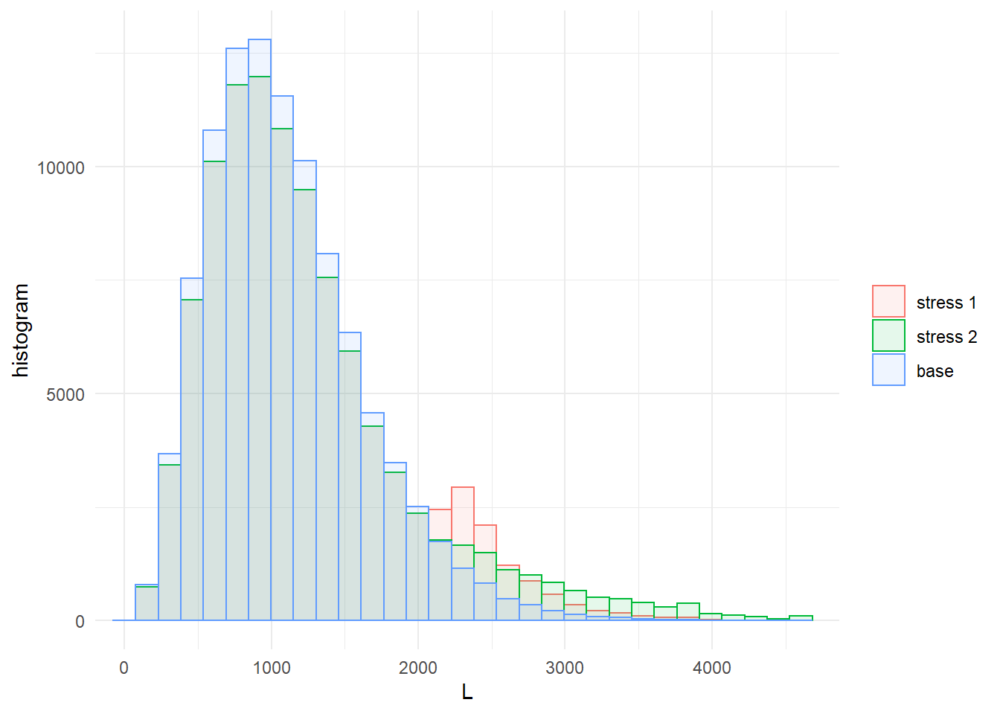

4 Credit Risk Portfolio
The data set
insert data(creditportfolio) here
contains 100,000 simulations of 7 variables \((L,L_1,L_2,L_3,H_1,H_2,H_3)\). The variables \(L_1,L_2,L_3\) represent losses generated by three homogeneous subportfolios ranked according to their risk profile. Each subportfolio is homogeneous as of exposure, loss given default, default probability and correlation. The three dependent variables \(H_1,H_2,H_3\) represent the common (conditional) default probability in each subportfolio. The total portfolio loss is \(L=L_1+L_2+L_3\). The precise assumptions and parameter values defining this data set are in Appendix.
4.1 Credit model example (#Sec:CreditModel)
In this example we introduce a stress to the Value at Risk of the overall loss \(L\); in particular, we require that \(\text{VaR}_{90\%}(L)\) be increased by \(20\%\). This can be achieved in SWIM using the stress function with the argument type = "VaR":
Further, we consider a second stress scenario under which, on top of the \(20\%\) increase in \(\text{VaR}_{90\%}(L)\), we add a \(30\%\) increase in \(\text{ES}_{90\%}(L)\). We decide to append this stress to the one already defined by setting x = stress.credit:
++++MAYBE CHANGE THE SECOND STRESS ACCORDING TO ANDREAS’ SUGGESTION? IE LEAVE VAR UNCHANGED (CURRENTLY NOT POSSIBLE) AND STRESS ES ONLY?
The summary function can be used to gather some information on a stressed object, and compare it to the original distribution (setting the option base = TRUE):
## $base
## L L1 L2 L3 H1 H2 H3
## mean 1102.914 19.96 454.04 628.912 0.000401 0.00968 0.0503
## sd 526.538 28.19 310.99 319.715 0.000400 0.00649 0.0252
## skewness 0.942 2.10 1.31 0.945 1.969539 1.30834 0.9501
## ex kurtosis 1.326 6.21 2.52 1.256 5.615908 2.49792 1.2708
## 1st Qu. 718.750 0.00 225.00 395.000 0.000115 0.00490 0.0318
## Median 1020.625 0.00 384.38 580.000 0.000279 0.00829 0.0464
## 3rd Qu. 1398.750 20.00 609.38 810.000 0.000555 0.01296 0.0643
##
## $`stress 1`
## L L1 L2 L3 H1 H2 H3
## mean 1193.39 20.83 501.10 671.46 0.000417 0.01066 0.0536
## sd 623.48 29.09 363.57 361.21 0.000415 0.00756 0.0285
## skewness 1.01 2.09 1.36 1.02 1.973337 1.35075 1.0283
## ex kurtosis 0.94 6.14 2.23 1.22 5.630153 2.23353 1.2382
## 1st Qu. 739.38 0.00 234.38 405.00 0.000120 0.00512 0.0328
## Median 1065.62 20.00 412.50 605.00 0.000290 0.00878 0.0483
## 3rd Qu. 1505.62 40.00 675.00 865.00 0.000578 0.01422 0.0688
##
## $`stress 2`
## L L1 L2 L3 H1 H2 H3
## mean 1224.76 21.13 519.17 684.46 0.000423 0.01102 0.0547
## sd 707.59 29.61 410.43 390.67 0.000427 0.00851 0.0308
## skewness 1.48 2.13 1.77 1.28 2.034985 1.76908 1.2802
## ex kurtosis 2.69 6.49 4.18 2.15 6.009169 4.26790 2.1077
## 1st Qu. 739.38 0.00 234.38 405.00 0.000121 0.00512 0.0328
## Median 1065.62 20.00 412.50 605.00 0.000293 0.00878 0.0484
## 3rd Qu. 1505.62 40.00 675.00 870.00 0.000584 0.01430 0.0692Note that information on the individual stresses can be recovered through the get_specs function, while get_weight allows to outsource the reweighting:
## type k alpha q s
## stress 1 VaR L 0.9 2174.25 <NA>
## stress 2 VaR ES L 0.9 2174.25 2848.5562625## stress 1 stress 2
## 1 1+++HERE WE COULD USE THE “expected shortfall” FUNCTION (NOT AVAILABLE YET) TO CALCULATE THE EXPECTED SHORTFALL OF “stress.credit$stress1”
To better appreciate the impact of the stresses and compare their effects on the variables \(L, M_1, M_2\) and \(M_3\), the plot_hist and plot_cdf functions can be used. The option xCol specifies which column of the data should be considered while wCol allows to precise the weights to be considered. Note that these graphical functions return an object compatible with the package ggplot2. As a consequence we can, for example, apply the function grid.arrange (of the package gridExtra) to compare the four histograms together:
library(gridExtra)
pL <- plot_hist(object = stress.credit, xCol = 1, wCol = 1, base = TRUE)
class(pL)## [1] "gg" "ggplot"pL1 <- plot_hist(object = stress.credit, xCol = 2, wCol = 1, base = TRUE)
pL2 <- plot_hist(object = stress.credit, xCol = 3, wCol = 1, base = TRUE)
pL3 <- plot_hist(object = stress.credit, xCol = 4, wCol = 1, base = TRUE)
grid.arrange(pL, pL1, pL2, pL3, ncol = 2, nrow = 2)
It is also possible to compare more than one stress at a time in a single plot:

Both \(L_2\) and \(L_3\) are affected by the stress, while \(L_1\)’s distribution is almost unchanged. To obtain a more precise measure of the sensitivity of each factor to the stress can be obtained through the function sensitivity. In particular, with the default option `type = “Gamma”, the function returns the ``Gamma’’ sensitivity measure introduced in +++REVERSE SENSITIVITY?REPORT DEFINITION?+++. Other available measures are based on the Kolmogorov and Wasserstein distances.
## stress type L1 L2 L3 H1 H2 H3
## 1 stress 1 Gamma 0.15 0.819 0.772 0.196 0.811 0.767Using the sensitivity function we can also analyse whether together the first and third tranches are able to exceed the riskiness of the second. This can be accomplished specifying, through the option f, a list of functions applicable to the columns k of the dataset. Finally, setting xCol = NULL allows to consider only the trasformed data:
## stress type f1
## 1 stress 1 Gamma 0.783The importance_rank function has the same structure of sensitivity but it will return the ranks, according to the absolute values, of the sensitivity measures. This function is particularly useful when there are several risk factors involved.
## stress type L1 L2 L3 H1 H2 H3
## 1 stress 1 Gamma 6 1 3 5 2 4It transpires that subportfolios \(2\) and \(3\) are, in this order, most responsible for the stress in the global loss. Also, most of the sensitivity seems to be due to the systematic risk components \(H_2\) and \(H_3\). To confirm this, another stress resulting in the same \(\text{VaR}_{90\%}(L)\), but controlling the distribution of \(H_2\), can be imposed using the function stress_moment. More precisely, we impose that \(E[H_2]\) and the \(75\%\) quantile of \(H_2\) are fixed as in the base model.
VaR.L <- quantile(x = credit_data[, "L"], prob = 0.9, type = 1)
q.H2 <- quantile(x = credit_data[, "H2"], prob = 0.75, type = 1)
str.var.credit2 <- stress_moment(x = credit_data,
f = list(function(x)1 * (x <= VaR.L * 1.2),
function(x)x,
function(x)1 * (x <= q.H2)),
m = c(0.9, mean(credit_data[, "H2"]), 0.75),
k = c(1, 6, 6))
# stress.credit <- stress_moment(x = stress.credit,
# f = list(function(x)1 * (x <= VaR.L * 1.2),
# function(x)x,
# function(x)1 * (x <= q.H2)),
# m = c(0.9, mean(credit_data[, "H2"]), 0.75), k = c(1, 6, 6))
summary(str.var.credit2)## $`stress 1`
## L L1 L2 L3 H1 H2 H3
## mean 1140.535 20.06 456.0 664.47 0.000400 0.00968 0.0530
## sd 616.930 28.48 340.9 371.14 0.000405 0.00706 0.0292
## skewness 1.059 2.13 1.4 1.09 2.013196 1.39135 1.0949
## ex kurtosis 0.895 6.40 2.3 1.31 5.899634 2.26506 1.3371
## 1st Qu. 695.000 0.00 206.2 395.00 0.000113 0.00453 0.0318
## Median 1001.875 0.00 365.6 590.00 0.000276 0.00786 0.0472
## 3rd Qu. 1430.625 20.00 609.4 855.00 0.000554 0.01296 0.0679## stress type L1 L2 L3 H1 H2 H3
## 1 stress 1 Gamma 0.0102 0.0203 0.366 -0.000521 1.17e-08 0.359+++THIS SHOULD BE APPENDED TO “stress.credit” WHEN “stress_moment” IS FIXED It is then clear that systematic risk prevails on binomial (event) risk.
The stress_moment function is flexible and allows different type of stresses to be imposed on a model. The following example forces a \(50\%\) increase in correlation between the losses in the second and third portfolios, while keeping the means und standard deviations unchanged.
m.L2 <- mean(credit_data[, "L2"])
m.L3 <- mean(credit_data[, "L3"])
m2.L2 <- mean(credit_data[, "L2"] ^ 2)
m2.L3 <- mean(credit_data[, "L3"] ^ 2)
cov.L2.L3 <- cov(credit_data[, "L2"], credit_data[, "L3"])
# str.var.credit2 <- stress_moment(x = credit_data,
# f = list(function(x)x,
# function(x)x,
# function(x)x ^ 2,
# function(x)x ^ 2,
# function(x)x[1] * x[2] - m.L2 * m.L3),
# k = list(3, 4, 3, 4, c(3, 4)),
# m = c(m.L2, m.L3, m2.L2, m2.L3, cov.L2.L3 * 1.5)+++CURRENTLY DOES NOT RUN - NEEDS TO BE FIXED OR REPLACED
+++FINAL COMMENTS?